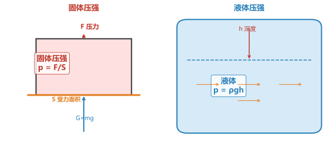
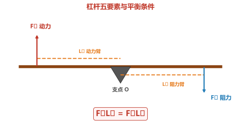
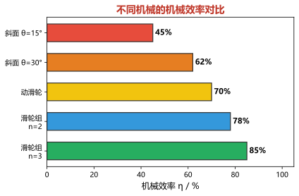
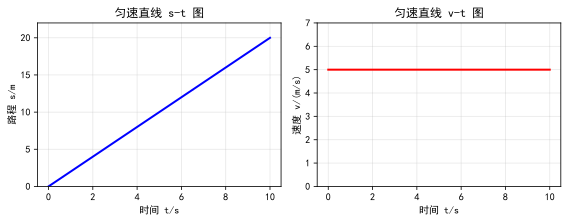
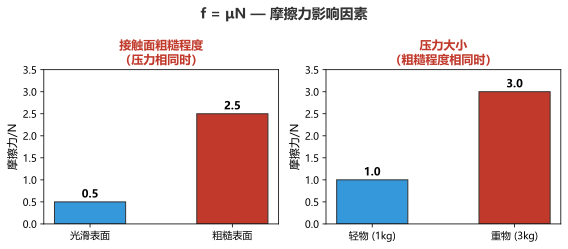

⚡ 初中物理 · 力学大全
受力分析 · 压强 · 浮力 · 简单机械 · 功与功率 · 机械效率 · 运动与力 · 中考全覆盖
一、受力分析
🔹 力的概念与分类
力是物体对物体的作用，单位：牛顿（N）。力的作用效果：①改变物体的形状 ②改变物体的运动状态。
力的三要素：大小、方向、作用点（力的示意图要标出三要素）。
重力 G=mg弹力（支持力、拉力）摩擦力 f
力的三要素：大小、方向、作用点（力的示意图要标出三要素）。
重力 G=mg弹力（支持力、拉力）摩擦力 f

G = mg | 二力平衡：F合 = 0
🔹 受力分析顺序："一重二弹三摩擦"
第一步：重力 — 竖直向下，作用在重心
第二步：弹力 — 支持力（垂直于接触面）、拉力（沿绳方向）、压力
第三步：摩擦力 — 与相对运动方向相反（注意判断有无摩擦力）
关键 受力分析只分析"物体受到的力"，不分析"物体施加的力"！
技巧 先找重力，再找接触面（弹力+摩擦力），最后检查其他力。
第二步：弹力 — 支持力（垂直于接触面）、拉力（沿绳方向）、压力
第三步：摩擦力 — 与相对运动方向相反（注意判断有无摩擦力）
关键 受力分析只分析"物体受到的力"，不分析"物体施加的力"！
技巧 先找重力，再找接触面（弹力+摩擦力），最后检查其他力。
例题 1：静止在水平桌面上的书本，受到哪些力？画出受力示意图。
分析：①重力G（竖直向下）②支持力N（竖直向上）— 二力平衡，G=N
分析：①重力G（竖直向下）②支持力N（竖直向上）— 二力平衡，G=N
重力 G = mg 竖直向下，支持力 N = G 竖直向上，二力平衡。注意：书本不受"压力"（压力是书本对桌面的力）。
例题 2：在水平地面上匀速前进的小车，受到哪些力？
分析：①重力G↓ ②支持力N↑ ③牵引力F→ ④摩擦力f←（匀速→合力为零）
分析：①重力G↓ ②支持力N↑ ③牵引力F→ ④摩擦力f←（匀速→合力为零）
四个力：G=N（竖直方向平衡），F=f（水平方向平衡）。因为匀速运动，所以合力为零。
练习 1：在斜面上静止的物体，画出它的受力示意图。
受到三个力：①重力G（竖直向下）②支持力N（垂直于斜面向上）③静摩擦力f（沿斜面向上，防止下滑）
练习 2：悬挂在天花板下的吊灯，分析受力情况。
受到两个力：①重力G（竖直向下）②绳的拉力F（竖直向上）— 二力平衡，G=F
二、压强
🔹 压强基本概念
物体单位面积上所受的压力叫压强。反映压力的作用效果。
p = F/S单位：Pa（帕斯卡）1 Pa = 1 N/m²
p = F/S单位：Pa（帕斯卡）1 Pa = 1 N/m²

固体：p = F/S | 柱体对水平面：p = ρgh | 液体：p = ρgh
🔹 液体压强
液体内部向各个方向都有压强，同种液体同一深度压强相等。
影响因素：液体密度 ρ、深度 h（与液体体积、容器形状无关）
p = ρgh深度 h 从自由液面竖直向下计算
连通器原理：同种液体静止时各液面高度相同（茶壶、锅炉水位计、船闸）
影响因素：液体密度 ρ、深度 h（与液体体积、容器形状无关）
p = ρgh深度 h 从自由液面竖直向下计算
连通器原理：同种液体静止时各液面高度相同（茶壶、锅炉水位计、船闸）
例题 3：一个质量为 60kg 的人，每只脚与地面的接触面积为 200cm²。求他站立时对地面的压强。
解：F=G=mg=60×10=600N，S=200×2=400cm²=0.04m²
p=F/S=600/0.04=15000Pa
解：F=G=mg=60×10=600N，S=200×2=400cm²=0.04m²
p=F/S=600/0.04=15000Pa
注意：站立时两脚着地，受力面积是两只脚的总面积。行走时单脚着地，压强翻倍！
练习 3：水坝深 20m 处，水对坝底的压强是多少？（ρ水=1.0×10³kg/m³，g=10N/kg）
p=ρgh=1.0×10³×10×20=2×10⁵Pa
三、浮力
🔹 阿基米德原理
浸在液体中的物体受到向上的浮力，浮力大小等于物体排开液体的重力。
F浮 = ρ液 g V排 浮力与物体密度、形状、深度无关 V排 = 物体浸入部分的体积
F浮 = ρ液 g V排 浮力与物体密度、形状、深度无关 V排 = 物体浸入部分的体积

F浮 = G排 = ρ液 g V排
🔹 浮沉条件
| 状态 | 条件（浸没时） | ρ物 与 ρ液 | 应用 |
|---|---|---|---|
| 上浮→漂浮 | F浮 > G | ρ物 < ρ液 | 轮船（空心法） |
| 悬浮 | F浮 = G | ρ物 = ρ液 | 水中悬浮 |
| 下沉→沉底 | F浮 < G | ρ物 > ρ液 | 潜水艇（改变自重） |
例题 4：一艘轮船从海里驶入河里，它受到的浮力____，船身____（上浮/下沉）一些？
解：漂浮时 F浮=G，重力不变→浮力不变。ρ海水>ρ河水，由F浮=ρ液gV排，ρ液↓→V排↑，船身下沉一些。
解：漂浮时 F浮=G，重力不变→浮力不变。ρ海水>ρ河水，由F浮=ρ液gV排，ρ液↓→V排↑，船身下沉一些。
浮力不变（始终等于船重），但河水密度小于海水，排开水的体积增大，船身下沉。
练习 4：一个质量为 0.6kg、体积为 1×10⁻³m³ 的木块，放入水中静止后的浮力是多少？（g=10N/kg）
ρ木=0.6/10⁻³=0.6×10³kg/m³<ρ水，所以漂浮。F浮=G=mg=0.6×10=6N
四、简单机械
🔹 杠杆
在力的作用下绕固定点转动的硬棒。五要素：支点、动力、阻力、动力臂、阻力臂。

F₁L₁ = F₂L₂ | 省力杠杆：L₁ > L₂ | 费力杠杆：L₁ < L₂
🔹 滑轮
| 类型 | 特点 | 实质 | 公式 |
|---|---|---|---|
| 定滑轮 | 不省力，改变方向 | 等臂杠杆 | F=G |
| 动滑轮 | 省一半力，不改变方向 | 动力臂=2×阻力臂 | F=G/2 |
| 滑轮组 | 既省力又可以改变方向 | — | F=G/n |
例题 5：用一个动滑轮将重 200N 的物体匀速提升 2m，不计摩擦和滑轮重，求：(1)拉力 F (2)绳端移动距离 s
解：动滑轮 F=G/2=200/2=100N，s=2h=2×2=4m
解：动滑轮 F=G/2=200/2=100N，s=2h=2×2=4m
动滑轮省一半力但费一倍距离。若考虑滑轮重（G轮=20N），则 F=(G+G轮)/2=110N。
练习 5：用滑轮组提升重 300N 的物体，绳子段数 n=3，求拉力 F（不计摩擦和滑轮重）。
F=G/n=300/3=100N
五、功与功率
🔹 功
功等于力与在力的方向上移动距离的乘积。
W = Fs单位：J（焦耳）1J = 1N·m
不做功的三种情况：①有力无距离（推车未动）②有距离无力（惯性前进）③力与距离垂直（水平提水桶走路）
W = Fs单位：J（焦耳）1J = 1N·m
不做功的三种情况：①有力无距离（推车未动）②有距离无力（惯性前进）③力与距离垂直（水平提水桶走路）

W = Fs | P = W/t | P = Fv（匀速运动）
🔹 功率
功率表示做功的快慢，与做功多少和时间有关。
P = W/tP = Fv单位：W（瓦特）1kW=1000W
注意：功率大不一定做功多（时间短），做功多不一定功率大（时间长）。
P = W/tP = Fv单位：W（瓦特）1kW=1000W
注意：功率大不一定做功多（时间短），做功多不一定功率大（时间长）。
例题 6：一台机器功率为 2kW，工作 30 秒做功多少？
解：P=2000W，t=30s，W=Pt=2000×30=6×10⁴J
解：P=2000W，t=30s，W=Pt=2000×30=6×10⁴J
注意单位换算：2kW=2000W
练习 6：用 100N 的水平推力使物体前进 5m，做的功是多少？
W=Fs=100×5=500J
六、机械效率
🔹 有用功、额外功、总功
有用功（W有）：为达到目的必须做的功（提升物体时 W有=Gh）
额外功（W额）：克服机械自重和摩擦做的功（不可避免）
总功（W总）：动力做的功 W总=W有+W额
η = W有/W总 × 100%机械效率总小于 1
额外功（W额）：克服机械自重和摩擦做的功（不可避免）
总功（W总）：动力做的功 W总=W有+W额
η = W有/W总 × 100%机械效率总小于 1

η = W有/W总 × 100% | 提高效率：减轻自重、减小摩擦
例题 7：用滑轮组将重 400N 的物体提升 2m，拉力为 150N，绳端移动了 8m，求：(1)有用功 (2)总功 (3)机械效率
解：W有=Gh=400×2=800J；W总=Fs=150×8=1200J；η=800/1200≈66.7%
解：W有=Gh=400×2=800J；W总=Fs=150×8=1200J；η=800/1200≈66.7%
注意：绳端移动距离 s=nh，n=s/h=8/2=4（4段绳子）。额外功 W额=W总-W有=400J。
练习 7：利用斜面将重物推上车，斜面长 3m、高 1m，推力 300N，物重 600N，求机械效率。
W有=Gh=600×1=600J；W总=Fs=300×3=900J；η=600/900=66.7%
七、运动与力
🔹 牛顿第一定律与惯性
一切物体在不受力时，总保持静止或匀速直线运动状态（牛顿第一定律）。
惯性：物体保持原来运动状态的性质，只与质量有关（与速度无关！）
注意：惯性是性质不是力，不能说"惯性力"或"受到惯性"
惯性的利用：跳远助跑、锤头松了锤柄撞地、撞击套紧
惯性：物体保持原来运动状态的性质，只与质量有关（与速度无关！）
注意：惯性是性质不是力，不能说"惯性力"或"受到惯性"
惯性的利用：跳远助跑、锤头松了锤柄撞地、撞击套紧
🔹 运动图像分析

s-t 图像：水平线→静止；斜线→匀速（斜率=速度）
v-t 图像：水平线→匀速；斜向上→加速；斜向下→减速
v-t图像面积 = 路程
v-t 图像：水平线→匀速；斜向上→加速；斜向下→减速
v-t图像面积 = 路程
🔹 摩擦力

摩擦力方向与相对运动方向相反（不是与运动方向相反！）
影响因素：①压力大小 ②接触面粗糙程度
f = μN增大摩擦：增大压力/增大粗糙度
减小摩擦：加润滑油/用滚动代替滑动
影响因素：①压力大小 ②接触面粗糙程度
f = μN增大摩擦：增大压力/增大粗糙度
减小摩擦：加润滑油/用滚动代替滑动
例题 8：一辆汽车在水平路面匀速行驶，牵引力为 2000N，受到的摩擦力是多少？若牵引力增大到 2500N，摩擦力变为多少？
解：匀速→F=f=2000N；牵引力增大时，滑动摩擦力只与压力和粗糙程度有关，不变，仍为2000N，汽车加速运动。
解：匀速→F=f=2000N；牵引力增大时，滑动摩擦力只与压力和粗糙程度有关，不变，仍为2000N，汽车加速运动。
关键：滑动摩擦力与速度、牵引力无关。牵引力增大但摩擦力不变，合力不为零，汽车加速。
练习 8：质量 2000kg 的汽车在水平路面匀速行驶，摩擦系数 μ=0.3，求摩擦力大小（g=10N/kg）。
压力 N=G=mg=2000×10=20000N；f=μN=0.3×20000=6000N
✍️ 综合应用
综合题 1：一个边长为 0.1m、密度为 2×10³kg/m³ 的正方体金属块，求：
(1) 质量为多少？(2) 重力为多少？(3) 放在水平面上对地面的压强？(4) 浸没水中时浮力？(5) 浸没时弹簧测力计示数？
解：V=0.001m³；m=ρV=2kg；G=20N；p=F/S=20/0.01=2000Pa；F浮=ρ水gV排=10N；F示=G-F浮=10N
(1) 质量为多少？(2) 重力为多少？(3) 放在水平面上对地面的压强？(4) 浸没水中时浮力？(5) 浸没时弹簧测力计示数？
解：V=0.001m³；m=ρV=2kg；G=20N；p=F/S=20/0.01=2000Pa；F浮=ρ水gV排=10N；F示=G-F浮=10N
综合题串联了密度、重力、压强、浮力、弹簧测力计多个知识点。关键：ρ=m/V，F浮=ρ液gV排。
综合题 2：工人用滑轮组提升重 480N 的物体，拉力 200N，绳端移动 6m 物体上升 2m，求：(1)有用功 (2)总功 (3)机械效率 (4)额外功
解：W有=Gh=480×2=960J；W总=Fs=200×6=1200J；η=960/1200=80%；W额=W总-W有=240J
解：W有=Gh=480×2=960J；W总=Fs=200×6=1200J；η=960/1200=80%；W额=W总-W有=240J
n=s/h=6/2=3段绳子。额外功用于克服动滑轮重和摩擦。若动滑轮重 G轮=60N，则克服动滑轮做功 W轮=G轮h=120J。
综合练习：质量为 1kg 的木块漂浮在水面上，求：(1)浮力 (2)排开水的体积 (3)浸入水中的深度（底面积 0.01m²）
(1)F浮=G=mg=10N；(2)V排=F浮/(ρ水g)=10⁻³m³；(3)h=V排/S=0.1m